Stage the lines you mean.
Diff, Split or Full file, with syntax colours. Click a line to stage it.
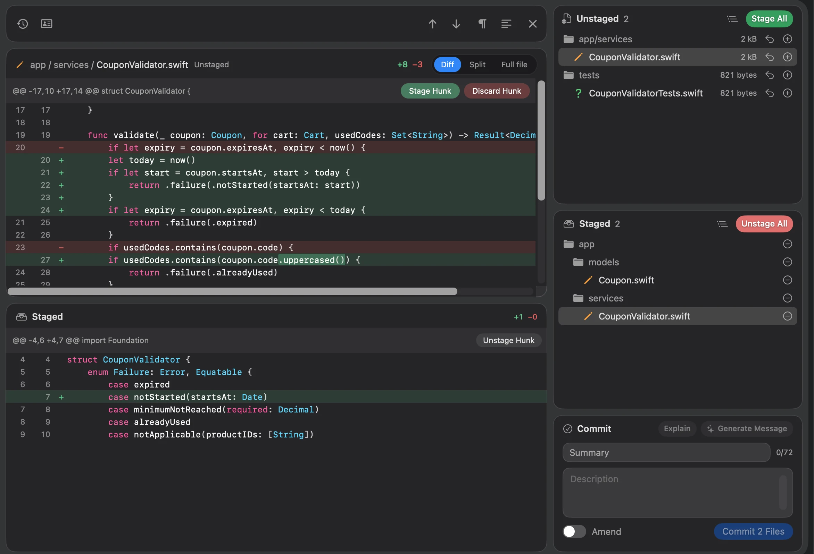
A native macOS git client that runs the git you already have. Branches, tags, stashes, remotes and worktrees in one window, each one click away.
Free and open source · macOS 15+ · Apple silicon
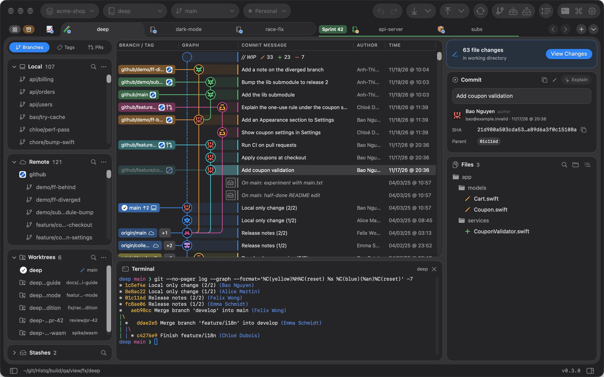
Add an account per host to each profile. Its pull requests open in the tab, where you review, reply, resolve and merge. Tokens stay in your Keychain.
Diff, Split or Full file, with syntax colours. Click a line to stage it.

Your key: OpenAI, Anthropic, Google Gemini, xAI or any OpenAI-compatible server.
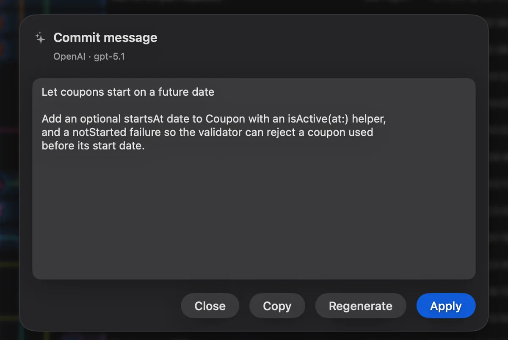


Also drafts rebase messages and pull requests. .aiignore keeps files out.
File History lists every commit that touched a file. Blame names the last change on each line.

Your PRs, review requests and issues. Reply to threads, resolve or reopen them, merge, or resolve conflicts with AI.


Identity, signing, SSH key and GitHub account, per git command. Your git config stays untouched.
git push toid_ed25519id_workTokens stay in your Keychain.
Classic, Stacked, Columns or Focus, with tabs on top or down the side. A terminal opens under the graph with ⌃`.
deep main ❯ git log

Sidebar, graph and details; a file opens over the graph.
Pin, group, archive and close tabs without losing them, then keep the whole set in a workspace file.
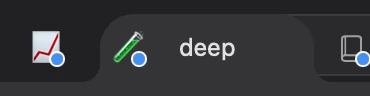
Pin the repositories you always keep open. A pinned tab shrinks to its icon and stays first.
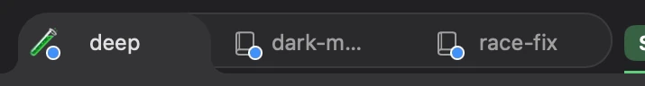
Tabs of one repository’s worktrees sit side by side in a box and always move together.
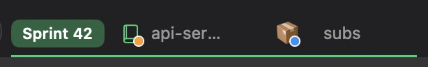
Put any tabs in a group with a color and a name. Click its chip to collapse it, drag the chip to move the whole group.
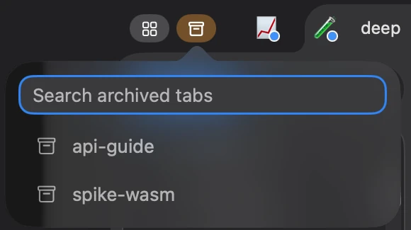
Archive a tab to clear the strip. The archive button lists them in a searchable dropdown; Unarchive Tab puts one back.
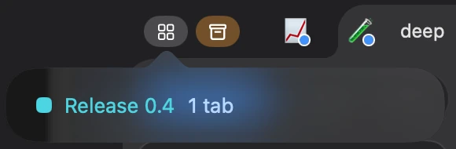
Like tab groups in Google Chrome: Close Group puts a group away with its tabs, and the grid button lists the closed groups by color, name and tab count. Click one to open it again.
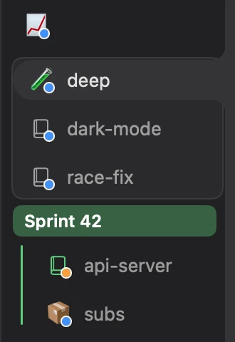
The same pins, boxes and groups in a column on the left. Move a tab to another window with its terminal and graph view; ⇧⌘T brings back what you closed.
Tabs, tab groups (closed ones too), each repository’s graph view and the profiles in a .histqws file. Open several at once, on any Mac.
~.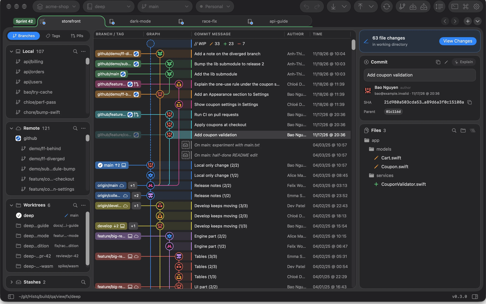
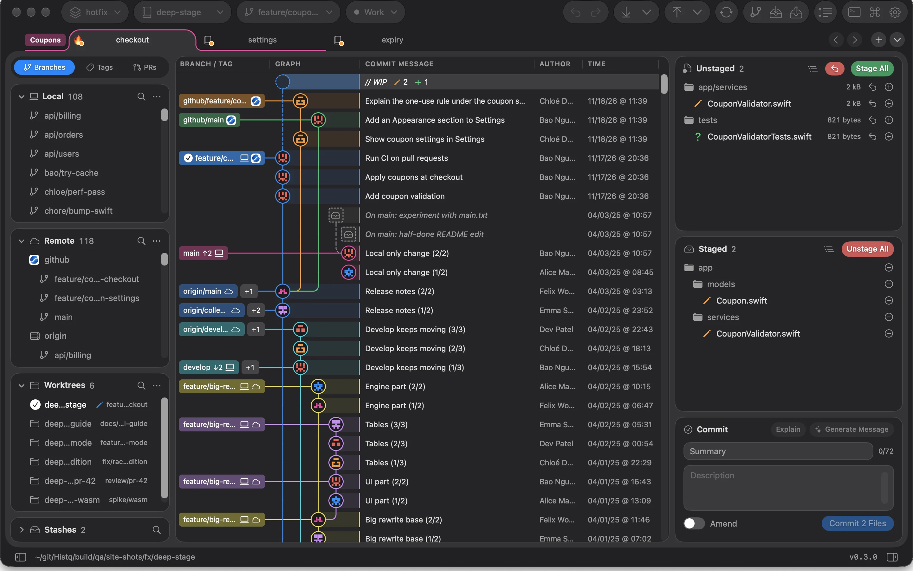
Needs git 2.36 or later. Histq updates itself.